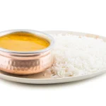

Mung Dal (Moong Dal)

Mung Dal, also known as Moong Dal, is a simple yet flavorful dish made with mung beans, tempered with aromatic spices.
Ingredients
- 1 cup mung dal (moong dal)
- 1 1/2 tsp oil
- 1 tsp cumin seeds (jeera)
- 2 tsp tomato paste
- 1/4 tsp turmeric powder
- 2 tsp asafoetida (hing)
- 1/4 tsp chili powder
- 2 tsp salt
- A small amount of butter
- 2 tbsp lemon juice (optional)
Steps
- Cook the Mung Dal:
- Rinse the mung dal thoroughly and soak it in water for 30 minutes. Drain.
- In a saucepan, add the soaked mung dal and 3 cups of water. Bring to a boil, reduce the heat, and cook covered until the dal is soft and mushy. Alternatively, cook the dal in a pressure cooker for 3-4 whistles.
- Prepare the Tempering:
- In a pan, heat the oil over medium heat. Add cumin seeds and let them splutter.
- Add tomato paste, turmeric powder, asafoetida, and chili powder. Sauté for 2-3 minutes until the spices are fragrant and well-blended.
- Combine and Cook:
- Add the cooked mung dal to the pan and mix well. Add salt and stir to combine.
- Adjust the consistency by adding water if needed. Simmer for 5-10 minutes, allowing the flavors to meld together.
- Finish with Butter and Lemon:
- Add a small amount of butter to the dal and stir until melted.
- If using, add lemon juice to the dal and mix well.
- Serve:
- Garnish with fresh coriander leaves before serving.
- Offer to Krishna and serve hot with rice or bread.